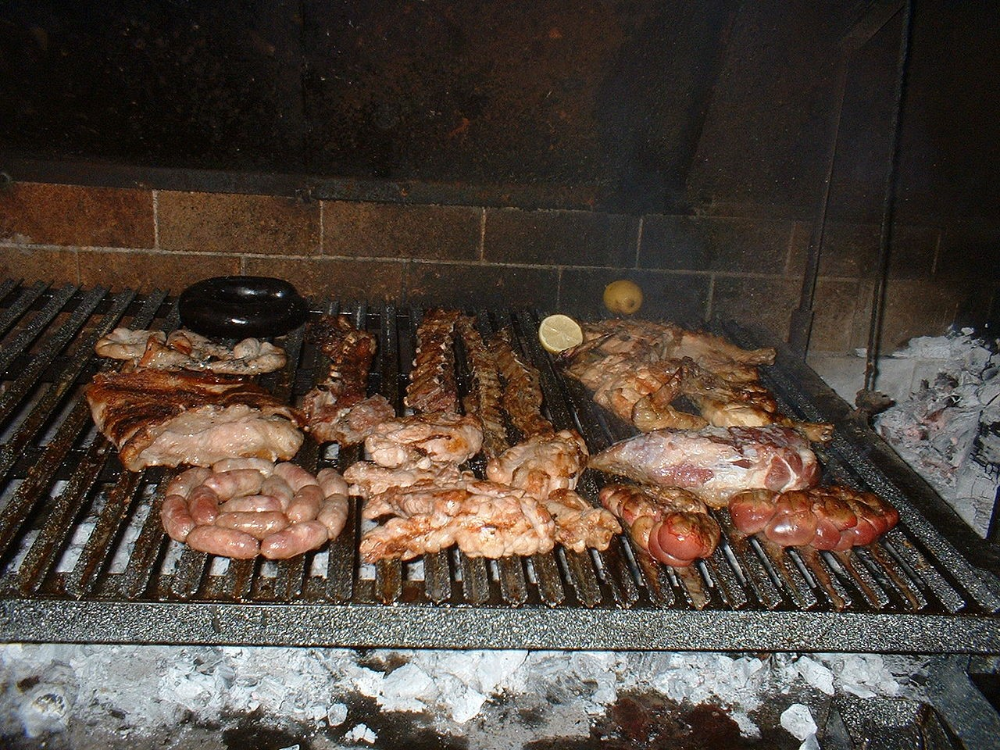

Аса́до (ісп. Asado) — страва зі смаженого м'яса, популярна у південноамериканських країнах. Зазвичай асадо готують чоловіки — асадори. Гриль для приготування страви (ісп. parrilla) є майже в кожній латиноамериканській родині, часто асадо готують прямо у дворі або на балконі.
Чипа (ісп. chipa) — невеликі печені булочки з тапіокової або кукурудзяної крупи з сиром, популярна закуска та сніданок в Парагваї і на північному сході Аргентини[1][2]. Рецепт чипи відомий з XIX століття, а його походження пов'язане з корінним народом Парагваю, гуарані. Чипа - недорогі закуски, які часто продають з вуличних прилавків або з автобусів з великих кошиків, в яких лежать загорнуті в тканину булочки.
Пастафрола (грец. πάστα φλώρα) — тип солодкого тарту, поширений в Аргентині, Парагваї, Уругваї, Єгипті та Греції. Для основи використовується пісочне тісто, як начинка — джем, його вкривають «решіткою» з тіста. Як начинку часто вживають айвовий мармелад (ісп. dulce de membrillo), варення з солодкої картоплі (ісп. dulce de batata), дульсе-де-лече, варення з гуяви чи полуниці. Пастафрола, як правило, запікається в духовці у круглій формі для випічки.

Ма́те — також відоме як парагвайський чай (ісп. yerba mate — «єрба-мате»), — спрепароване сухе листя вічнозеленої кущової рослини падуб парагвайський (Illex paraguariensis), що з прадавніх часів використовується південноамериканськими індіанцями для приготування тонізуючого напою, та сам цей напій, заварений у специфічному посуді. Зараз напій дуже популярний на великій частині південноамериканського континенту, зокрема і в Аргентині.